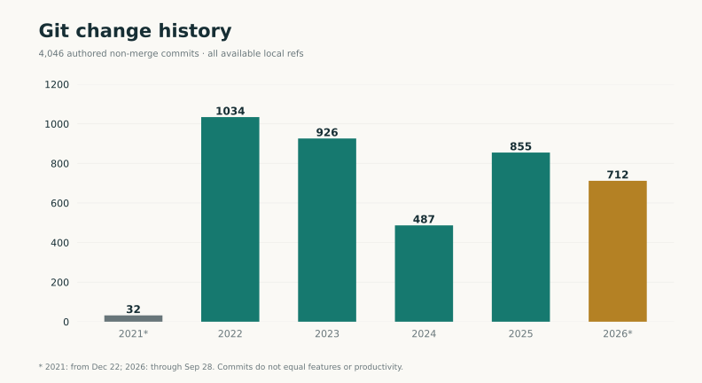
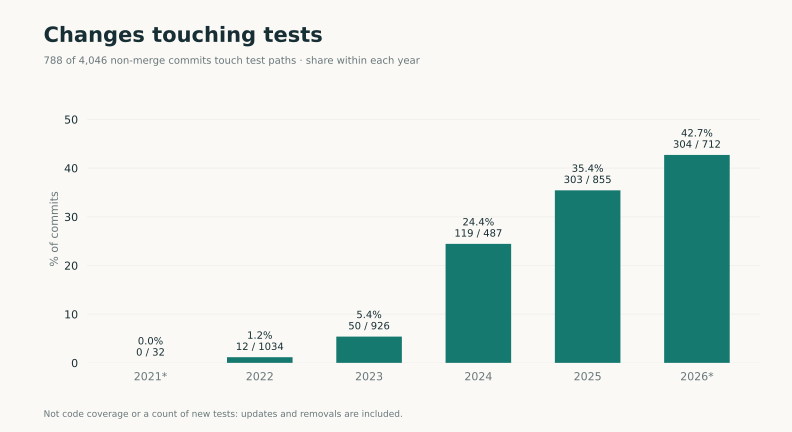

Valeriy Veselov / iOS Developer
Travel on the surface.Engineering underneath. Nearly five years working on OneTwoTrip and Solar: user journeys, shared components, quality and development tools.
Product work: December 2021–September 2026.
From the app / snapshot baseline eSIM × Travel history 4,046 authored commits
831 work items linked
342 authored merged PRs
21 detailed product and
* PR history starts in November 2024. Change counts are not a productivity score. How this was counted →
01 / Professional focus
From screen behavior Mobile product development goes beyond the interface. My work spans authentication, payments, network state, cross-module navigation, regression checks and release support.
Swift UIKit & SwiftUI TCA Tuist Unit · Snapshot · UI Jenkins
Technologies in context ↗ 02 / Case studies
Products. Components. Every case explains the context, my contribution, technical decisions and practical examples to discuss.
{{cards}}

Authored change history. The first and last years are partial. 
Testing becomes more prominent. This is not code coverage. 2021–22 Shared journeys App maintenance, chat, calendar, authentication and the start of Solar.
2023–24 A separate product and UI Solar, Digital Collectibles, UI 2.0, profile, loyalty and cards.
2025 End-to-end product areas eSIM, travel history, testing and Jenkins tools.
2026 Engineering systems Business trips, Stories, systems analysis, documentation and repository metrics.
Stages describe areas of work, not formal grades or promotions.
{{gallery}}eSIM checkout, financial interfaces and Stories. Snapshot tests using prepared data; each image identifies its source type. Design is team work.
06 / Practical examples
Experience in detail. 84 examples, from payment states and shared input fields to Jenkins recovery after a failure. Choose a topic or technology and open the full case.

 eSIM × Travel history
eSIM × Travel history